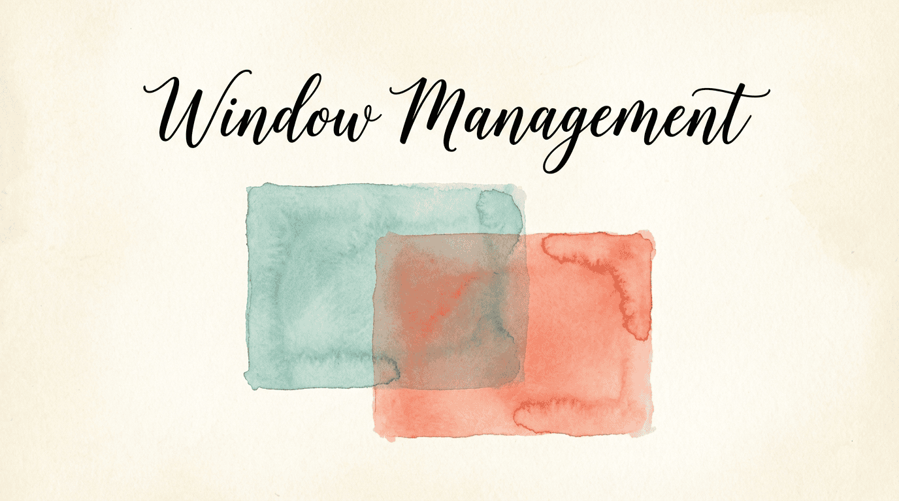

Dragging windows with a mouse breaks your flow. KeyPath lets you tile, snap, and move windows with keyboard shortcuts — left half, right half, corners, maximize, center, and switch between displays. All without touching the trackpad.
The fastest way to get window management:
Now hold Space, press W to enter the window layer, then press a key to snap:
Hold Space, then W, then:
┌─────┬─────┬─────┐
│ U │ I │ │ U = Top-left corner
│ ◸ │ ◹ │ │ I = Top-right corner
├─────┼─────┼─────┤
│ J │ K │ L │ J = Left half
│ ◧ │ ☐ │ ◨ │ K = Maximize L = Right half
├─────┼─────┼─────┤
│ N │ M │ │ N = Bottom-left corner
│ ◺ │ ◻ │ │ M = Bottom-right corner
└─────┴─────┴─────┘
Also:
[ = Previous display ] = Next display
, = Previous Space . = Next SpaceRelease Space to leave the window layer.
Window snapping uses macOS Accessibility APIs to move and resize the frontmost window. When you press a position key, KeyPath:
This works in every app — no per-app configuration needed.
The first time you use window snapping, macOS will ask you to grant KeyPath Accessibility permission in System Settings > Privacy & Security > Accessibility. Window management won't work without this.
| Key | Position | What it does |
|---|---|---|
| J | Left half | Window fills the left 50% of the screen |
| L | Right half | Window fills the right 50% |
| K | Maximize | Window fills the entire screen |
| ; | Center | Window centers on screen at current size |
| U | Top-left | Window fills the top-left quarter |
| I | Top-right | Window fills the top-right quarter |
| N | Bottom-left | Window fills the bottom-left quarter |
| M | Bottom-right | Window fills the bottom-right quarter |
| [ | Previous display | Move window to the display on the left |
| ] | Next display | Move window to the display on the right |
| , | Previous Space | Move window to the previous desktop Space |
| . | Next Space | Move window to the next desktop Space |
You can trigger window positions from Terminal, Shortcuts, or any tool that can open URLs:
open "keypath://window/left"
open "keypath://window/right"
open "keypath://window/maximize"
open "keypath://window/center"
open "keypath://window/top-left"
open "keypath://window/next-display"This works from Raycast, Alfred, Hammerspoon, or any automation tool. See the Action URI Reference for the full list.
Beyond window management, KeyPath can detect which app is in the foreground and switch your key mappings automatically. Different apps get different shortcuts — no manual toggling.
┌─────────────────────────────────────────────────────┐
│ Custom Rules │
│ │
│ ┌────────────────────────────────────────────────┐ │
│ │ EVERYWHERE (global rules) │ │
│ │ caps_lock ──→ escape │ │
│ └────────────────────────────────────────────────┘ │
│ │
│ ┌────────────────────────────────────────────────┐ │
│ │ 🧭 SAFARI │ │
│ │ h ──→ left j ──→ down │ │
│ │ k ──→ up l ──→ right │ │
│ └────────────────────────────────────────────────┘ │
└─────────────────────────────────────────────────────┘When you switch apps, KeyPath tells Kanata to switch layers automatically. Your keyboard adapts instantly.
A popular setup — use HJKL as arrow keys in Safari for keyboard-driven browsing:
Now HJKL works as arrow keys in Safari. Switch to any other app and they go back to normal letters.
Quick Launcher + Window Snapping: Launch an app and immediately tile it. Hold Hyper to launch Safari, then Space → W → L to snap it to the right half.
Vim Navigation + Window Snapping: Navigate text with Space → HJKL, then Space → W to tile the window, all without lifting your hands.
Running Scripts + Window Snapping: Script complex layouts — open three apps and tile them into a coding workspace with one key.
Window snapping doesn't work:
open "keypath://window/left" — if that works, the issue is in the layer activationApp-specific rules don't activate:
keypath://window/ action types